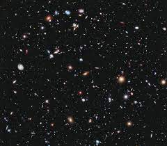
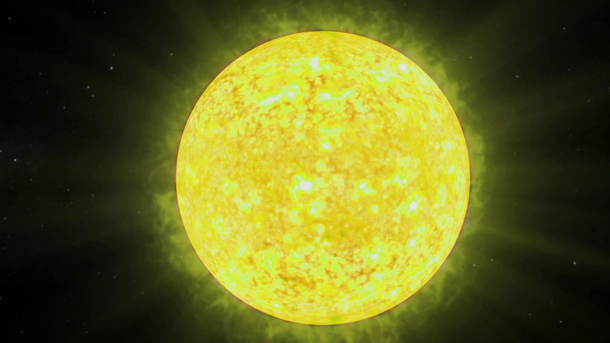
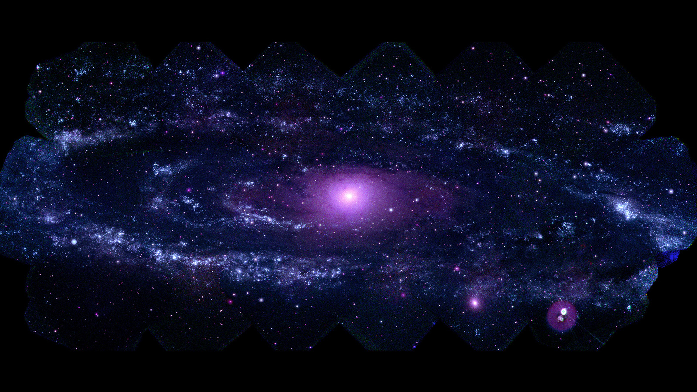
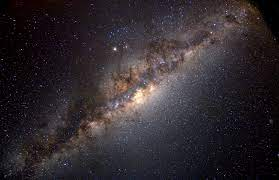

Stars and Galaxies: Marvels in the Cosmic Tapestry
Introduction:
Our universe is a vast canvas painted with extraordinary and sometimes peculiar celestial objects. From massive black holes consuming everything in their vicinity to galaxies merging into colossal swirls, and from the explosive demise of enormous stars to the enigmatic existence of neutron stars, the cosmos holds a myriad of wonders. JPL's research and missions have provided us with data and stunning images, unraveling the mysteries of these cosmic oddities.

Bizarre Celestial Objects:
Explore the universe's oddities, such as massive black holes exhibiting gravitational dominance and galaxies merging to form majestic celestial tapestries. Witness the colossal explosions of massive stars culminating in supernovas and marvel at the mind-boggling density of neutron stars, where a tablespoon of material weighs an astronomical billion tons on Earth.

Invisible Forces: Dark Matter and Dark Energy:
Cosmologists, delving into the origin and evolution of the universe, have unveiled the presence of invisible phenomena—dark matter and dark energy. Dark matter, constituting a staggering 85% of the universe's mass, serves as the foundational framework for galaxy construction. Dark energy, comprising over two-thirds of the total energy in the universe, remains a crucial element in comprehending the past and future of our cosmic home.
Galaxies: Cosmic Star Clusters:
Discover the cosmic choreography of stars forming immense groups known as galaxies, held together by the omnipotent force of gravity. Our own Sun resides in a spiral galaxy named the Milky Way, positioned halfway from the galactic center on one of its arms.

Galactic Diversity:
Delve into the diversity of galaxies, ranging from the smallest, housing a "mere" few hundred million stars, to the largest, hosting up to one hundred trillion stars. Scientists have categorized galaxies into four main types: spiral, elliptical, peculiar, and irregular, each contributing to the cosmic mosaic in unique ways.
The Milky Way and Beyond:
Our Sun, an unassuming star in the grand cosmic theater, belongs to the Milky Way galaxy. Astronomers estimate an astonishing 100 thousand million stars within the Milky Way alone, and beyond its boundaries, millions upon millions of other galaxies populate the cosmic expanse.

Embark on a cosmic journey as we explore the captivating realms of stars and galaxies, unraveling their mysteries, understanding their diversity, and contemplating the vastness of the cosmic tapestry that surrounds us.